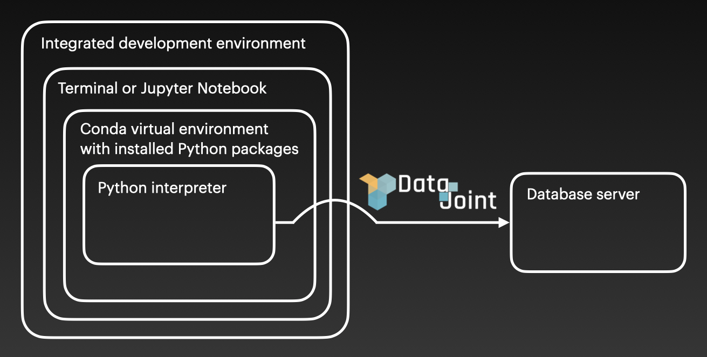

Setup instructions for workflows created with the DataJoint Elements
- The following document describes the steps to setup a development environment so that you can use the DataJoint Elements to build and run a workflow on your local machine.
- The DataJoint Elements can be combined together to create a workflow that
matches your experimental setup. We have created example workflows (e.g.
workflow-array-ephys,workflow-calcium-imaging) for your reference. In this tutorial we will install these example DataJoint workflows.
- These instructions can be adapted for your custom DataJoint workflow.
- There are several ways to create a development environment. Here we will discuss one method in detail, and will highlight other methods along the way. If you have already set up certain components, feel free to skip those sections.
- You will need administrative privileges on your system for the following setup instructions.
System architecture

- The above diagram describes the general components for a local DataJoint development environment.
Install an integrated development environment
- DataJoint development and use can be done with a plain text editor in the terminal. However, an integrated development environment (IDE) can improve your experience. Several IDEs are available.
- In this setup example, we will use Microsoft's Visual Studio Code. Installation instructions here
Install a relational database
- A key feature of DataJoint is the ability to connect with a database server from a scientific programming environment (i.e., Python or MATLAB) so that your experimental data can be stored in the database and downloaded from the database.
- There are several options if you would like to install a local relational
database server + Docker image for MySQL server configured for use with DataJoint
+ [Install MariaDB server](https://mariadb.com/kb/en/binary-packages/)
- Alternatively, for simplicity of this tutorial you can use the DataJoint
Playground tutorial database located at
tutorial-db.datajoint.iowhich has already been configured. Please note that the tutorial database should not be used for your experimental analysis as the storage is not persistent.
Install a version control system
- Git is an open-source, distributed version control system for collaborating with software development. GitHub is a platform that hosts projects managed with Git. As the example DataJoint workflows are hosted on GitHub, we will use Git to clone (i.e., download) this repository.
- For your own DataJoint workflow development we recommended that you use Git and GitHub for collaboration.
- Many systems come preinstalled with Git. You can test if Git is already
installed by typing
gitin a terminal window.
- If Git is not installed on your system, Install Git.
Install a virtual environment
- A virtual environment allows you to install the packages required for a specific project within an isolated environment on your computer.
- It is highly recommended (though not strictly required) to create a virtual environment to run the workflow.
-
Conda and virtualenv are virtual environment managers and you can use either option. Below you will find instructions for conda.
- Miniconda is a minimal installer for conda. Follow the installer instructions for your operating system.
-
You may need to add the Miniconda directory to the PATH environment variable
- First locate the Miniconda directory
- Then modify and run the following command
bash export PATH="<absolute-path-to-miniconda-directory>/bin:$PATH"- Create a new conda environment
bash conda create -n <environment_name> python=<version>
- Create a new conda environment
- Example command to create a conda environment
bash conda create -n workflow-array-ephys python=3.8.11
- Activate the conda environment
bash conda activate <environment_name>
Install Jupyter Notebook packages
-
Install the following, if you are using Jupyter Notebook.
bash conda install jupyter ipykernel nb_conda_kernels
- Install the following, for
dj.Diagramto render.bash conda install graphviz python-graphviz pydotplus
Clone and install the relevant repository
-
In a terminal window and change the directory to where you want to clone the repository
bash cd ~/Projects
-
Clone the relevant repository, often one of the workflows
bash git clone https://github.com/datajoint/<repository>
-
Change into the cloned directory
bash cd <repository>
- From the root of the cloned repository directory. Note: the
-eflag, which will will install this repository in editable mode, in case there's a need to modify the code (e.g. the workflowpipeline.pyorpaths.pyscripts). If no such modification is required, usingpip install .is sufficient.bash pip install -e . -
Install
element-interface, which contains scripts to load data for many of our Elements, and all workflowsbash pip install "element-interface @ git+https://github.com/datajoint/element-interface"
-
Items specific to
workflow-calcium-imagingClick to expand details
element-interfacecan also be used to install packages used for reading acquired data (e.g.,scanreader) and running analyses (e.g.,CaImAn).
-
Install
element-interfacewithscanreaderbash pip install "element-interface[scanreader] @ git+https://github.com/datajoint/element-interface"
-
Install
element-interfacewithsbxreaderbash pip install "element-interface[sbxreader] @ git+https://github.com/datajoint/element-interface"
-
Install
element-interfacewithSuite2pbash pip install "element-interface[suite2p] @ git+https://github.com/datajoint/element-interface"
-
Install
element-interfacewithCaImAnrequires two separate commandsbash pip install "element-interface[caiman_requirements] @ git+https://github.com/datajoint/element-interface" pip install "element-interface[caiman] @ git+https://github.com/datajoint/element-interface"
- Example
element-interfaceinstallation with multiple packagesbash pip install "element-interface[caiman_requirements] @ git+https://github.com/datajoint/element-interface" pip install "element-interface[scanreader,sbxreader,suite2p,caiman] @ git+https://github.com/datajoint/element-interface"
Set up a connection to the database server
-
One way to set up a connection to the database server with DataJoint is to create a local configuration file (i.e.,
dj_local_conf.json) at the root of the repository folder, with the following template:json { "database.host": "<hostname>", "database.user": "<username>", "database.password": "<password>", "loglevel": "INFO", "safemode": true, "display.limit": 7, "display.width": 14, "display.show_tuple_count": true, "custom": { "database.prefix": "<username_>" } }
-
Specify the database's
hostname,username, andpassword.- If using the
Docker image for MySQL server configured for use with DataJoint then the
hostnamewill belocalhost.
- If using the tutorial database, the
hostnamewill betutorial-db.datajoint.io. And theusernameandpasswordwill be the credentials for your DataJoint account.
- If using the
Docker image for MySQL server configured for use with DataJoint then the
-
Specify a
database.prefixwhich will be the prefix for your schema names.- For a local setup, it can be set as you see fit (e.g.,
neuro_).
- For the
tutorial-dbdatabase, you will use your DataJoint username.
- For a local setup, it can be set as you see fit (e.g.,
- Specific workflows will require additional information in the custom field, including
paths to data directories, following the convention described in the
directory structure section. If
multiple root directories exist, include all in the relevant json array.
+
workflow-array-ephysClick to expand
```json "custom": { "database.prefix": "<username_>", "ephys_root_data_dir": ["Full path to root directory of raw data", "Full path to root directory of processed data"] } ``` </details>+
workflow-calcium-imagingClick to expand
```json "custom": { "database.prefix": "<username_>", "imaging_root_data_dir": ["Full path to root directory of raw data", "Full path to root directory of processed data"] } ``` </details>+
workflow-miniscopeClick to expand
```json "custom": { "database.prefix": "<username_>", "miniscope_root_data_dir": ["Full path to root directory of raw data", "Full path to root directory of processed data"] } ``` </details>+
workflow-deeplabcutClick to expand
```json "custom": { "database.prefix": "<username_>", "dlc_root_data_dir": ["Full path to root directory of raw data", "Full path to root directory of processed data"] } ``` </details>
Setup complete
- At this point the setup of this workflow is complete.
Download example data
- We provide example data to use with the example DataJoint workflows.
- The data is hosted on DataJoint's Archive which is an AWS storage and can be download with djarchive-client.
-
Install
djarchive-clientbash pip install git+https://github.com/datajoint/djarchive-client.git
-
In your python interpreter, import the client
python import djarchive_client client = djarchive_client.client()
-
Browse the available datasets
python list(client.datasets())
- Each datasets has different versions associated with the version of the
workflow package. Browse the revisions.
python list(client.revisions())
-
Prepare a directory to store the download data, for example in
/tmpbash mkdir /tmp/example_data
-
Download a given dataset
python client.download('<workflow-dataset>', target_directory='/tmp/example_data', revision='<revision>')
- We will use this data as an example for the tutorial notebooks for each workflow. If you want to use for own dataset for the workflow, change the path accordingly.
-
Directory organization
-
workflow-array-ephysClick to expand details
/tmp/example_data/ - subject6 - session1 - towersTask_g0_imec0 - towersTask_g0_t0_nidq.meta - towersTask_g0_t0.nidq.bin- The example subject6/session1 data was recorded with SpikeGLX and processed with Kilosort2.
-
element-array-ephysandworkflow-array-ephysalso support data recorded with OpenEphys.
-
workflow-calcium-imagingClick to expand details
/tmp/example_data/ - subject3/ - 210107_run00_orientation_8dir/ - run00_orientation_8dir_000_000.sbx - run00_orientation_8dir_000_000.mat - suite2p/ - combined - plane0 - plane1 - plane2 - plane3 - subject7/ - session1 - suite2p - plane0- The example subject3 data was recorded with Scanbox and processed with Suite2p.
- The example subject7 data was recorded with ScanImage and processed with Suite2p.
-
element-calcium-imagingandworkflow-calcium-imagingalso support data processed with CaImAn.
-
Directory structure and file naming convention
- The workflow presented here is designed to work with the directory structure and file naming convention as described below.
-
workflow-array-ephysClick to expand details
- The
ephys_root_data_diris configurable in thedj_local_conf.json, undercustom/ephys_root_data_dirvariable.
- The
subjectdirectory names must match the identifiers of your subjects in thesubjects.csv script(./user_data/subjects.csv).
- The
sessiondirectories can have any naming convention.
- Each session can have multiple probes, the
probedirectories must match the following naming convention:`*[0-9]` (where `[0-9]` is a one digit number specifying the probe number)
-
Each
probedirectory should contain:-
One neuropixels meta file, with the following naming convention:
*[0-9].ap.meta
- Potentially one Kilosort output folder
-
<ephys_root_data_dir>/ └───<subject1>/ # Subject name in `subjects.csv` │ └───<session0>/ # Session directory in `sessions.csv` │ │ └───imec0/ │ │ │ │ *imec0.ap.meta │ │ │ └───ksdir/ │ │ │ │ spike_times.npy │ │ │ │ templates.npy │ │ │ │ ... │ │ └───imec1/ │ │ │ *imec1.ap.meta │ │ └───ksdir/ │ │ │ spike_times.npy │ │ │ templates.npy │ │ │ ... │ └───<session1>/ │ │ │ ... └───<subject2>/ │ │ ... - The
-
workflow-calcium-imagingClick to expand details
- Note: the
element-calcium-imagingis designed to accommodate multiple scans per session, however, in this particularworkflow-calcium-imaging, we take the assumption that there is only one scan per session.
- The
imaging_root_data_dirdirectory is configurable in thedj_local_conf.json, under thecustom/imaging_root_data_dirvariable
- The
subjectdirectory names must match the identifiers of your subjects in thesubjects.csvscript (./user_data/subjects.csv).
- The
sessiondirectories can have any naming convention -
Each
sessiondirectory should contain:- All
.tifor.sbxfiles for the scan, with any naming convention
- One
suite2psubfolder persessionfolder, containing theSuite2panalysis outputs
- One
caimansubfolder persessionfolder, containing theCaImAnanalysis output.hdf5file, with any naming convention
- All
imaging_root_data_dir/ └───<subject1>/ # Subject name in `subjects.csv` │ └───<session0>/ # Session directory in `sessions.csv` │ │ │ scan_0001.tif │ │ │ scan_0002.tif │ │ │ scan_0003.tif │ │ │ ... │ │ └───suite2p/ │ │ │ ops1.npy │ │ └───plane0/ │ │ │ │ ops.npy │ │ │ │ spks.npy │ │ │ │ stat.npy │ │ │ │ ... │ │ └───plane1/ │ │ │ ops.npy │ │ │ spks.npy │ │ │ stat.npy │ │ │ ... │ │ └───caiman/ │ │ │ analysis_results.hdf5 │ └───<session1>/ # Session directory in `sessions.csv` │ │ │ scan_0001.tif │ │ │ scan_0002.tif │ │ │ ... └───<subject2>/ # Subject name in `subjects.csv` │ │ ... - Note: the
Interacting with the DataJoint workflow
-
Connect to the database and import tables
python from <relevant-workflow>.pipeline import *
- View the declared tables
-
workflow-array-ephysClick to expand details
```python subject.Subject() session.Session() ephys.ProbeInsertion() ephys.EphysRecording() ephys.Clustering() ephys.Clustering.Unit() ```-
workflow-calcium-imagingClick to expand details
```python subject.Subject() session.Session() scan.Scan() scan.ScanInfo() imaging.ProcessingParamSet() imaging.ProcessingTask() ``` </details>
- For an in depth explanation of how to run the workflows and explore the data,
please refer to the following workflow specific Jupyter notebooks. +
workflow-array-ephysJupyter notebooks +workflow-calcium-imagingJupyter notebooks
DataJoint LabBook
- DataJoint LabBook is a graphical user interface to facilitate working with DataJoint tables.
- DataJoint LabBook Documentation, including prerequisites, installation, and running the application
Developer guide
Development mode installation
- This method allows you to modify the source code for example DataJoint
workflows (e.g.
workflow-array-ephys,workflow-calcium-imaging) and their dependencies (i.e., DataJoint Elements).
- Launch a new terminal and change directory to where you want to clone the
repositories
bash cd ~/Projects
-
workflow-array-ephysClick to expand details
-
Clone the repositories
bash git clone https://github.com/datajoint/element-lab git clone https://github.com/datajoint/element-animal git clone https://github.com/datajoint/element-session git clone https://github.com/datajoint/element-interface git clone https://github.com/datajoint/element-array-ephys git clone https://github.com/datajoint/workflow-array-ephys
-
Install each package with the
-eoptionbash pip install -e ./element-lab pip install -e ./element-animal pip install -e ./element-session pip install -e ./element-interface pip install -e ./element-array-ephys pip install -e ./workflow-array-ephys
-
-
workflow-calcium-imagingClick to expand details
-
Clone the repositories
bash git clone https://github.com/datajoint/element-lab git clone https://github.com/datajoint/element-animal git clone https://github.com/datajoint/element-session git clone https://github.com/datajoint/element-interface git clone https://github.com/datajoint/element-calcium-imaging git clone https://github.com/datajoint/workflow-calcium-imaging
-
Install each package with the
-eoptionbash pip install -e ./element-lab pip install -e ./element-animal pip install -e ./element-session pip install -e ./element-interface pip install -e ./element-calcium-imaging pip install -e ./workflow-calcium-imaging
-
Optionally drop all schemas
- If required to drop all schemas, the following is the dependency order.
Also refer to
notebooks/06-drop-optional.ipynbwithin the respectiveworkflow.
workflow-array-ephysClick to expand details
``` from workflow_array_ephys.pipeline import *
ephys.schema.drop() probe.schema.drop() session.schema.drop() subject.schema.drop() lab.schema.drop() ```
workflow-calcium-imagingClick to expand details
``` from workflow_calcium_imaging.pipeline import *
imaging.schema.drop() scan.schema.drop() session.schema.drop() subject.schema.drop() lab.schema.drop() ```
workflow-miniscopeClick to expand details
``` from workflow_miniscope.pipeline import *
miniscope.schema.drop() session.schema.drop() subject.schema.drop() lab.schema.drop() ```
Run integration tests
- Download the test dataset to your local machine. Note the directory where the
dataset is saved (e.g.
/tmp/testset).
- Create an
.envfile within thedockerdirectory with the following content. Replace/tmp/testsetwith the directory where you have the test dataset downloaded.TEST_DATA_DIR=/tmp/testset
- If testing an unreleased version of the
elementor your fork of anelementor theworkflow, within theDockerfileuncomment the lines from the different options presented. This will allow you to install the repositories of interest and run the integration tests on those packages. Be sure that theelementpackage version matches the version in therequirements.txtof theworkflow.
- Run the Docker container.
docker-compose -f ./docker/docker-compose-test.yaml up --build